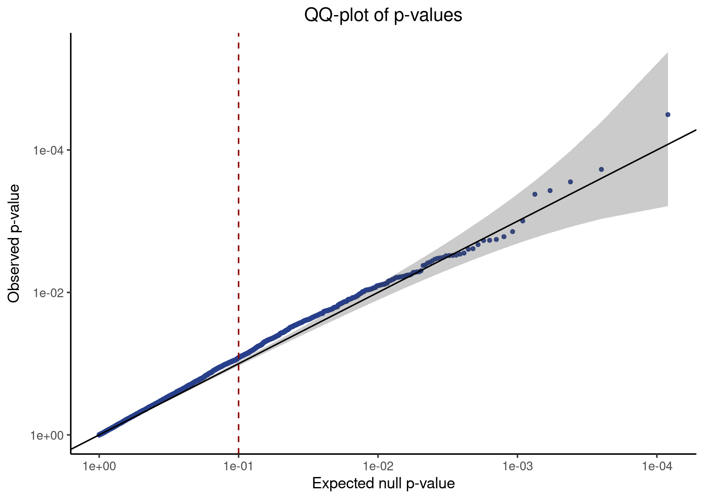

Last updated: 2022-05-26
Checks: 7 0
Knit directory: GSFA_analysis/
This reproducible R Markdown analysis was created with workflowr (version 1.7.0). The Checks tab describes the reproducibility checks that were applied when the results were created. The Past versions tab lists the development history.
Great! Since the R Markdown file has been committed to the Git repository, you know the exact version of the code that produced these results.
Great job! The global environment was empty. Objects defined in the global environment can affect the analysis in your R Markdown file in unknown ways. For reproduciblity it's best to always run the code in an empty environment.
The command set.seed(20220524) was run prior to running the code in the R Markdown file. Setting a seed ensures that any results that rely on randomness, e.g. subsampling or permutations, are reproducible.
Great job! Recording the operating system, R version, and package versions is critical for reproducibility.
Nice! There were no cached chunks for this analysis, so you can be confident that you successfully produced the results during this run.
Great job! Using relative paths to the files within your workflowr project makes it easier to run your code on other machines.
Great! You are using Git for version control. Tracking code development and connecting the code version to the results is critical for reproducibility.
The results in this page were generated with repository version 6ba0a95. See the Past versions tab to see a history of the changes made to the R Markdown and HTML files.
Note that you need to be careful to ensure that all relevant files for the analysis have been committed to Git prior to generating the results (you can use wflow_publish or wflow_git_commit). workflowr only checks the R Markdown file, but you know if there are other scripts or data files that it depends on. Below is the status of the Git repository when the results were generated:
Ignored files:
Ignored: .Rhistory
Ignored: .Rproj.user/
Untracked files:
Untracked: code/run_sceptre_LUHMES_data.sbatch
Untracked: code/run_sceptre_Tcells_stimulated_data.sbatch
Untracked: code/run_sceptre_Tcells_unstimulated_data.sbatch
Untracked: code/sceptre_LUHMES_data.R
Untracked: code/sceptre_Tcells_stimulated_data.R
Untracked: code/sceptre_Tcells_unstimulated_data.R
Note that any generated files, e.g. HTML, png, CSS, etc., are not included in this status report because it is ok for generated content to have uncommitted changes.
These are the previous versions of the repository in which changes were made to the R Markdown (analysis/sceptre_TCells_data.Rmd) and HTML (docs/sceptre_TCells_data.html) files. If you've configured a remote Git repository (see ?wflow_git_remote), click on the hyperlinks in the table below to view the files as they were in that past version.
| File | Version | Author | Date | Message |
|---|---|---|---|---|
| Rmd | 6ba0a95 | kevinlkx | 2022-05-26 | updated code links |
| html | e84ebd8 | kevinlkx | 2022-05-26 | Build site. |
| Rmd | 4d9841a | kevinlkx | 2022-05-26 | updated SCEPTRE results for T cells |
CROP-seq datasets: /project2/xinhe/yifan/Factor_analysis/shared_data/ The data are Seurat objects, with raw gene counts stored in obj@assays$RNA@counts, and cell meta data stored in obj@meta.data. Normalized and scaled data used for GSFA are stored in obj@assays$RNA@scale.data , the rownames of which are the 6k genes used for GSFA.
Scripts for running the analysis:
cd /project2/xinhe/kevinluo/GSFA/log
sbatch --mem=50G --cpus-per-task=10 ~/projects/GSFA_analysis/code/run_sceptre_cropseq_data.sbatch /project2/xinhe/kevinluo/GSFA/sceptre_analysis/TCells_cropseq_data/simulated_data
sbatch --mem=50G --cpus-per-task=10 ~/projects/GSFA_analysis/code/run_sceptre_cropseq_data.sbatch /project2/xinhe/kevinluo/GSFA/sceptre_analysis/TCells_cropseq_data/unsimulated_dataLoad packages
suppressPackageStartupMessages(library(tidyverse))
library(cowplot)
library(Matrix)
library(sceptre)
library(Seurat)Load the T Cells CROP-seq data
TCells_data <- readRDS('/project2/xinhe/yifan/Factor_analysis/shared_data/TCells_cropseq_data_seurat.rds')We first prepare three separate data objects required to run SCEPTRE: the gene expression matrix, the perturbation matrix, and the covariate matrix.
Separate stimulated and unstimulated cells into two data sets, and run those separately.
metadata <- TCells_data@meta.data
metadata[1:5, ]
table(metadata$orig.ident)
stimulated_cells <- rownames(metadata)[which(endsWith(metadata$orig.ident, "S"))]
cat(length(stimulated_cells), "stimulated cells. \n")
unstimulated_cells <- rownames(metadata)[which(endsWith(metadata$orig.ident, "N"))]
cat(length(unstimulated_cells), "unstimulated cells. \n")
# orig.ident nCount_RNA nFeature_RNA ARID1A BTLA C10orf54
# D1S_AAACCTGAGCGATTCT TCells_D1S 8722 2642 0 0 0
# D1S_AAACCTGCAAGCCGTC TCells_D1S 7296 2356 0 1 0
# D1S_AAACCTGCAGGGCATA TCells_D1S 6467 2154 0 0 0
# D1S_AAACCTGGTAAGGGCT TCells_D1S 12151 3121 0 0 0
# D1S_AAACCTGGTAGCGCTC TCells_D1S 11170 2964 0 0 1
# CBLB CD3D CD5 CDKN1B DGKA DGKZ HAVCR2 LAG3 LCP2 MEF2D
# D1S_AAACCTGAGCGATTCT 0 0 0 0 0 0 0 0 0 0
# D1S_AAACCTGCAAGCCGTC 0 0 0 0 0 0 0 0 0 0
# D1S_AAACCTGCAGGGCATA 0 0 0 0 0 0 0 0 0 0
# D1S_AAACCTGGTAAGGGCT 1 0 0 0 0 0 0 0 0 0
# D1S_AAACCTGGTAGCGCTC 0 0 0 0 0 0 0 0 0 0
# NonTarget PDCD1 RASA2 SOCS1 STAT6 TCEB2 TMEM222 TNFRSF9
# D1S_AAACCTGAGCGATTCT 0 0 0 0 0 1 0 0
# D1S_AAACCTGCAAGCCGTC 0 0 0 0 0 0 0 0
# D1S_AAACCTGCAGGGCATA 0 0 0 0 1 0 0 0
# D1S_AAACCTGGTAAGGGCT 0 0 0 0 0 0 0 0
# D1S_AAACCTGGTAGCGCTC 0 0 0 0 0 0 0 0
# percent_mt gRNA_umi_count
# D1S_AAACCTGAGCGATTCT 3.370787 1
# D1S_AAACCTGCAAGCCGTC 5.921053 1
# D1S_AAACCTGCAGGGCATA 2.860677 1
# D1S_AAACCTGGTAAGGGCT 3.045017 6
# D1S_AAACCTGGTAGCGCTC 3.240824 7
#
# TCells_D1N TCells_D1S TCells_D2N TCells_D2S
# 5533 6843 5144 7435
# 14278 stimulated cells.
# 10677 unstimulated cells.We first prepare three separate data objects required to run SCEPTRE: the gene expression matrix, the perturbation matrix, and the covariate matrix.
gene_matrix <- TCells_data@assays$RNA@counts[, stimulated_cells]
# gene-by-cell expression matrix
gene_matrix[1:5, 1:3]
dim(gene_matrix)
# 5 x 3 sparse Matrix of class "dgCMatrix"
# D1S_AAACCTGAGCGATTCT D1S_AAACCTGCAAGCCGTC D1S_AAACCTGCAGGGCATA
# ENSG00000243485 . . .
# ENSG00000237613 . . .
# ENSG00000186092 . . .
# ENSG00000238009 . . .
# ENSG00000239945 . . .
# [1] 33694 14278covariate_matrix <- metadata[stimulated_cells, c('nCount_RNA', 'nFeature_RNA', 'percent_mt', 'gRNA_umi_count')]
covariate_matrix[1:5,]
dim(covariate_matrix)
# nCount_RNA nFeature_RNA percent_mt gRNA_umi_count
# D1S_AAACCTGAGCGATTCT 8722 2642 3.370787 1
# D1S_AAACCTGCAAGCCGTC 7296 2356 5.921053 1
# D1S_AAACCTGCAGGGCATA 6467 2154 2.860677 1
# D1S_AAACCTGGTAAGGGCT 12151 3121 3.045017 6
# D1S_AAACCTGGTAGCGCTC 11170 2964 3.240824 7
# [1] 14278 4combined_perturbation_matrix <- t(metadata[stimulated_cells, 4:24])
combined_perturbation_matrix[1:5,1:3]
dim(combined_perturbation_matrix)
range(combined_perturbation_matrix)
# D1S_AAACCTGAGCGATTCT D1S_AAACCTGCAAGCCGTC D1S_AAACCTGCAGGGCATA
# ARID1A 0 0 0
# BTLA 0 1 0
# C10orf54 0 0 0
# CBLB 0 0 0
# CD3D 0 0 0
# [1] 21 14278
# [1] 0 1datadir <- '/project2/xinhe/kevinluo/GSFA/sceptre_analysis/TCells_cropseq_data/simulated_data'
save(list = c("gene_matrix", "combined_perturbation_matrix", "covariate_matrix"),
file = file.path(datadir, 'data.matrices.RData'))gene_matrix <- TCells_data@assays$RNA@counts[, unstimulated_cells]
# gene-by-cell expression matrix
gene_matrix[1:5, 1:3]
dim(gene_matrix)
# 5 x 3 sparse Matrix of class "dgCMatrix"
# D1N_AAACCTGAGCGATTCT D1N_AAACCTGCAAAGTGCG D1N_AAACCTGCAGCCTATA
# ENSG00000243485 . . .
# ENSG00000237613 . . .
# ENSG00000186092 . . .
# ENSG00000238009 . . .
# ENSG00000239945 . . .
# [1] 33694 10677covariate_matrix <- metadata[unstimulated_cells, c('nCount_RNA', 'nFeature_RNA', 'percent_mt', 'gRNA_umi_count')]
covariate_matrix[1:5,]
dim(covariate_matrix)
# nCount_RNA nFeature_RNA percent_mt gRNA_umi_count
# D1N_AAACCTGAGCGATTCT 5710 1993 2.416813 5
# D1N_AAACCTGCAAAGTGCG 2146 1111 2.143523 1
# D1N_AAACCTGCAGCCTATA 7284 2386 2.443712 2
# D1N_AAACCTGCAGCCTTGG 4991 2015 1.021839 2
# D1N_AAACCTGCAGTGAGTG 4847 1861 1.691768 4
# [1] 10677 4combined_perturbation_matrix <- t(metadata[unstimulated_cells, 4:24])
combined_perturbation_matrix[1:5,1:3]
dim(combined_perturbation_matrix)
range(combined_perturbation_matrix)
# D1N_AAACCTGAGCGATTCT D1N_AAACCTGCAAAGTGCG D1N_AAACCTGCAGCCTATA
# ARID1A 0 0 0
# BTLA 0 0 0
# C10orf54 0 0 0
# CBLB 0 0 0
# CD3D 0 0 0
# [1] 21 10677
# [1] 0 1datadir <- '/project2/xinhe/kevinluo/GSFA/sceptre_analysis/TCells_cropseq_data/unsimulated_data'
save(list = c("gene_matrix", "combined_perturbation_matrix", "covariate_matrix"),
file = file.path(datadir, 'data.matrices.RData'))We include the genes used for GSFA in this analysis
# Normalized and scaled data used for GSFA, the rownames of which are the 6k genes used for GSFA
scaled_gene_matrix <- TCells_data@assays$RNA@scale.data
dim(scaled_gene_matrix)
selected_gene_ids <- rownames(scaled_gene_matrix)
gRNA_groups <- colnames(metadata[, 4:24])
pairs <- expand.grid(selected_gene_ids, gRNA_groups)
gene_gRNA_group_pairs <- data.frame(gene_id = pairs$Var1, gRNA_group = pairs$Var2, pair_type = "candidate")
gene_gRNA_group_pairs[gene_gRNA_group_pairs$gRNA_group == "NonTarget", "pair_type"] <- "negative_control"
table(gene_gRNA_group_pairs$pair_type)
table(gene_gRNA_group_pairs$gRNA_group)
dim(gene_gRNA_group_pairs)
# [1] 6000 24955
#
# candidate negative_control
# 120000 6000
#
# ARID1A BTLA C10orf54 CBLB CD3D CD5 CDKN1B DGKA
# 6000 6000 6000 6000 6000 6000 6000 6000
# DGKZ HAVCR2 LAG3 LCP2 MEF2D NonTarget PDCD1 RASA2
# 6000 6000 6000 6000 6000 6000 6000 6000
# SOCS1 STAT6 TCEB2 TMEM222 TNFRSF9
# 6000 6000 6000 6000 6000
# [1] 126000 3saveRDS(gene_gRNA_group_pairs, file.path(datadir, "gene.gRNA.group.pairs.rds"))datadir <- '/project2/xinhe/kevinluo/GSFA/sceptre_analysis/TCells_cropseq_data/simulated_data'
load(file.path(datadir, "data.matrices.RData"))
gene_gRNA_group_pairs <- readRDS(file.path(datadir, "gene.gRNA.group.pairs.rds"))
cat(sprintf('Dimenstion of gene expression matrix: %d rows %d columns.\n', nrow(gene_matrix), ncol(gene_matrix)))
cat(sprintf('Dimenstion of combined perturbation matrix: %d rows %d columns.\n', nrow(combined_perturbation_matrix), ncol(combined_perturbation_matrix)))
cat(sprintf('Dimenstion of covariate matrix: %d rows %d columns.\n', nrow(covariate_matrix), ncol(covariate_matrix)))
cat(sprintf('Dimenstion of gene gRNA-group pairs: %d rows %d columns.\n', nrow(gene_gRNA_group_pairs), ncol(gene_gRNA_group_pairs)))
table(gene_gRNA_group_pairs$pair_type)
# Dimenstion of gene expression matrix: 33694 rows 14278 columns.
# Dimenstion of combined perturbation matrix: 21 rows 14278 columns.
# Dimenstion of covariate matrix: 14278 rows 4 columns.
# Dimenstion of gene gRNA-group pairs: 126000 rows 3 columns.
#
# candidate negative_control
# 120000 6000result <- run_sceptre_high_moi(gene_matrix = gene_matrix,
combined_perturbation_matrix = combined_perturbation_matrix,
covariate_matrix = covariate_matrix,
gene_gRNA_group_pairs = gene_gRNA_group_pairs,
side = "both",
storage_dir = outdir,
full_output = FALSE)
outdir <- '/project2/xinhe/kevinluo/GSFA/sceptre_analysis/TCells_cropseq_data/simulated_data/sceptre_output'
saveRDS(result, file.path(outdir, 'sceptre.result.rds'))datadir <- '/project2/xinhe/kevinluo/GSFA/sceptre_analysis/TCells_cropseq_data/unsimulated_data'
load(file.path(datadir, "data.matrices.RData"))
gene_gRNA_group_pairs <- readRDS(file.path(datadir, "gene.gRNA.group.pairs.rds"))
cat(sprintf('Dimenstion of gene expression matrix: %d rows %d columns.\n', nrow(gene_matrix), ncol(gene_matrix)))
cat(sprintf('Dimenstion of combined perturbation matrix: %d rows %d columns.\n', nrow(combined_perturbation_matrix), ncol(combined_perturbation_matrix)))
cat(sprintf('Dimenstion of covariate matrix: %d rows %d columns.\n', nrow(covariate_matrix), ncol(covariate_matrix)))
cat(sprintf('Dimenstion of gene gRNA-group pairs: %d rows %d columns.\n', nrow(gene_gRNA_group_pairs), ncol(gene_gRNA_group_pairs)))
table(gene_gRNA_group_pairs$pair_type)
# Dimenstion of gene expression matrix: 33694 rows 10677 columns.
# Dimenstion of combined perturbation matrix: 21 rows 10677 columns.
# Dimenstion of covariate matrix: 10677 rows 4 columns.
# Dimenstion of gene gRNA-group pairs: 126000 rows 3 columns.
#
# candidate negative_control
# 120000 6000result <- run_sceptre_high_moi(gene_matrix = gene_matrix,
combined_perturbation_matrix = combined_perturbation_matrix,
covariate_matrix = covariate_matrix,
gene_gRNA_group_pairs = gene_gRNA_group_pairs,
side = "both",
storage_dir = outdir,
full_output = FALSE)
outdir <- '/project2/xinhe/kevinluo/GSFA/sceptre_analysis/TCells_cropseq_data/unsimulated_data/sceptre_output'
saveRDS(result, file.path(outdir, 'sceptre.result.rds'))outdir <- '/project2/xinhe/kevinluo/GSFA/sceptre_analysis/TCells_cropseq_data/simulated_data/sceptre_output'
simulated_result <- readRDS(file.path(outdir, 'sceptre.result.rds'))
head(simulated_result, 10)
# gene_id gRNA_id pair_type p_value z_value
# 1 ENSG00000251562 ARID1A candidate 0.049743147 -4.0650638
# 2 ENSG00000271503 ARID1A candidate 0.081646989 -4.7379535
# 3 ENSG00000205542 ARID1A candidate 0.036029269 -2.0986917
# 4 ENSG00000197061 ARID1A candidate 0.639853573 1.3499471
# 5 ENSG00000166710 ARID1A candidate 0.611455771 -0.4742834
# 6 ENSG00000034510 ARID1A candidate 0.693087406 -0.4227958
# 7 ENSG00000123416 ARID1A candidate 0.691568438 -0.7272926
# 8 ENSG00000100097 ARID1A candidate 0.008149016 -5.0418373
# 9 ENSG00000227507 ARID1A candidate 0.076608825 -4.6493140
# 10 ENSG00000115523 ARID1A candidate 0.037677595 -10.8577546Negative control pairs
neg_control_p_vals <- simulated_result %>% filter(pair_type == "negative_control") %>% pull(p_value)
qq_plot <- make_qq_plot(neg_control_p_vals)
plot(qq_plot)
| Version | Author | Date |
|---|---|---|
| e84ebd8 | kevinlkx | 2022-05-26 |
Candidate pairs We extract the p-values corresponding to the candidate pairs and apply a Benjamini-Hochberg (BH) correction to adjust for multiple testing.
simulated_candidate_pair_results <- simulated_result %>% filter(pair_type == "candidate")
simulated_candidate_pair_results_p_adj <- simulated_candidate_pair_results %>%
mutate(p_val_adj = p.adjust(p_value, method = "BH"))
head(simulated_candidate_pair_results_p_adj)
# gene_id gRNA_id pair_type p_value z_value p_val_adj
# 1 ENSG00000251562 ARID1A candidate 0.04974315 -4.0650638 0.7177451
# 2 ENSG00000271503 ARID1A candidate 0.08164699 -4.7379535 0.7733805
# 3 ENSG00000205542 ARID1A candidate 0.03602927 -2.0986917 0.6886414
# 4 ENSG00000197061 ARID1A candidate 0.63985357 1.3499471 0.9607658
# 5 ENSG00000166710 ARID1A candidate 0.61145577 -0.4742834 0.9584866
# 6 ENSG00000034510 ARID1A candidate 0.69308741 -0.4227958 0.9673933We call pairs with an adjusted p-value of less or equal than 0.1 significant; the discovery set (i.e., the set of significant pairs) has a false discovery rate (FDR) of 10%.
simulated_discovery_set <- simulated_candidate_pair_results_p_adj %>% filter(p_val_adj <= 0.1)
head(simulated_discovery_set)
# gene_id gRNA_id pair_type p_value z_value p_val_adj
# 1 ENSG00000019582 ARID1A candidate 7.111315e-05 7.237385 0.0711131498
# 2 ENSG00000277734 ARID1A candidate 2.392761e-05 -5.749545 0.0333873558
# 3 ENSG00000171476 ARID1A candidate 6.543151e-06 -6.836853 0.0137750554
# 4 ENSG00000142546 ARID1A candidate 8.094629e-05 4.973680 0.0758871486
# 5 ENSG00000142669 ARID1A candidate 5.941077e-08 -5.755366 0.0002547392
# 6 ENSG00000172543 ARID1A candidate 3.492456e-05 -6.783390 0.0441152381saveRDS(simulated_candidate_pair_results_p_adj, file.path(outdir, 'sceptre.candidate.pair.results.rds'))
saveRDS(simulated_discovery_set, file.path(outdir, 'sceptre.discovery.set.results.rds'))outdir <- '/project2/xinhe/kevinluo/GSFA/sceptre_analysis/TCells_cropseq_data/unsimulated_data/sceptre_output'
unsimulated_result <- readRDS(file.path(outdir, 'sceptre.result.rds'))
head(unsimulated_result, 10)
# gene_id gRNA_id pair_type p_value z_value
# 1 ENSG00000251562 ARID1A candidate 0.307288436 -1.119783084
# 2 ENSG00000271503 ARID1A candidate 0.255094569 -3.434577254
# 3 ENSG00000205542 ARID1A candidate 0.124270007 -1.408917138
# 4 ENSG00000197061 ARID1A candidate 0.508142785 1.959389328
# 5 ENSG00000166710 ARID1A candidate 0.998544879 0.001743273
# 6 ENSG00000034510 ARID1A candidate 0.536159905 0.787584531
# 7 ENSG00000123416 ARID1A candidate 0.828083765 -0.868736493
# 8 ENSG00000100097 ARID1A candidate 0.009152439 -6.235823985
# 9 ENSG00000227507 ARID1A candidate 0.698088383 0.653613012
# 10 ENSG00000115523 ARID1A candidate 0.656404329 2.593409372Negative control pairs
neg_control_p_vals <- unsimulated_result %>% filter(pair_type == "negative_control") %>% pull(p_value)
qq_plot <- make_qq_plot(neg_control_p_vals)
plot(qq_plot)
| Version | Author | Date |
|---|---|---|
| e84ebd8 | kevinlkx | 2022-05-26 |
Candidate pairs We extract the p-values corresponding to the candidate pairs and apply a Benjamini-Hochberg (BH) correction to adjust for multiple testing.
unsimulated_candidate_pair_results <- unsimulated_result %>% filter(pair_type == "candidate")
unsimulated_candidate_pair_results_p_adj <- unsimulated_candidate_pair_results %>%
mutate(p_val_adj = p.adjust(p_value, method = "BH"))
head(unsimulated_candidate_pair_results_p_adj)
# gene_id gRNA_id pair_type p_value z_value p_val_adj
# 1 ENSG00000251562 ARID1A candidate 0.3072884 -1.119783084 0.9364386
# 2 ENSG00000271503 ARID1A candidate 0.2550946 -3.434577254 0.9230442
# 3 ENSG00000205542 ARID1A candidate 0.1242700 -1.408917138 0.8776804
# 4 ENSG00000197061 ARID1A candidate 0.5081428 1.959389328 0.9666872
# 5 ENSG00000166710 ARID1A candidate 0.9985449 0.001743273 0.9998483
# 6 ENSG00000034510 ARID1A candidate 0.5361599 0.787584531 0.9711391We call pairs with an adjusted p-value of less or equal than 0.1 significant; the discovery set (i.e., the set of significant pairs) has a false discovery rate (FDR) of 10%.
unsimulated_discovery_set <- unsimulated_candidate_pair_results_p_adj %>% filter(p_val_adj <= 0.1)
head(unsimulated_discovery_set)
# gene_id gRNA_id pair_type p_value z_value p_val_adj
# 1 ENSG00000163191 ARID1A candidate 9.474409e-06 -5.118703 0.031475343
# 2 ENSG00000157303 BTLA candidate 3.239915e-05 4.278822 0.066774171
# 3 ENSG00000146066 C10orf54 candidate 1.075991e-05 4.393335 0.033672848
# 4 ENSG00000043462 C10orf54 candidate 3.060097e-05 4.280412 0.066774171
# 5 ENSG00000117859 C10orf54 candidate 2.915000e-05 4.015791 0.065405999
# 6 ENSG00000167286 CD3D candidate 4.442419e-07 -4.908626 0.002401329saveRDS(unsimulated_candidate_pair_results_p_adj, file.path(outdir, 'sceptre.candidate.pair.results.rds'))
saveRDS(unsimulated_discovery_set, file.path(outdir, 'sceptre.discovery.set.results.rds'))
sessionInfo()
# R version 4.0.4 (2021-02-15)
# Platform: x86_64-pc-linux-gnu (64-bit)
# Running under: Scientific Linux 7.4 (Nitrogen)
#
# Matrix products: default
# BLAS/LAPACK: /software/openblas-0.3.13-el7-x86_64/lib/libopenblas_haswellp-r0.3.13.so
#
# locale:
# [1] LC_CTYPE=en_US.UTF-8 LC_NUMERIC=C
# [3] LC_TIME=en_US.UTF-8 LC_COLLATE=en_US.UTF-8
# [5] LC_MONETARY=en_US.UTF-8 LC_MESSAGES=en_US.UTF-8
# [7] LC_PAPER=en_US.UTF-8 LC_NAME=C
# [9] LC_ADDRESS=C LC_TELEPHONE=C
# [11] LC_MEASUREMENT=en_US.UTF-8 LC_IDENTIFICATION=C
#
# attached base packages:
# [1] stats graphics grDevices utils datasets methods base
#
# other attached packages:
# [1] SeuratObject_4.0.4 Seurat_4.1.0 sceptre_0.1.0 Matrix_1.4-1
# [5] cowplot_1.1.1 forcats_0.5.1 stringr_1.4.0 dplyr_1.0.8
# [9] purrr_0.3.4 readr_2.1.2 tidyr_1.2.0 tibble_3.1.6
# [13] ggplot2_3.3.5 tidyverse_1.3.1 workflowr_1.7.0
#
# loaded via a namespace (and not attached):
# [1] readxl_1.4.0 backports_1.4.1 plyr_1.8.6
# [4] igraph_1.2.11 lazyeval_0.2.2 splines_4.0.4
# [7] listenv_0.8.0 scattermore_0.7 digest_0.6.29
# [10] htmltools_0.5.2 fansi_1.0.3 magrittr_2.0.3
# [13] tensor_1.5 cluster_2.1.2 ROCR_1.0-11
# [16] tzdb_0.3.0 globals_0.14.0 modelr_0.1.8
# [19] matrixStats_0.61.0 spatstat.sparse_2.1-0 colorspace_2.0-3
# [22] rvest_1.0.2 ggrepel_0.9.1 haven_2.5.0
# [25] xfun_0.30 callr_3.7.0 crayon_1.5.1
# [28] jsonlite_1.8.0 spatstat.data_2.1-2 survival_3.3-1
# [31] zoo_1.8-9 glue_1.6.2 polyclip_1.10-0
# [34] gtable_0.3.0 leiden_0.3.9 future.apply_1.8.1
# [37] abind_1.4-5 scales_1.2.0 DBI_1.1.2
# [40] spatstat.random_2.1-0 miniUI_0.1.1.1 Rcpp_1.0.8.3
# [43] viridisLite_0.4.0 xtable_1.8-4 reticulate_1.24
# [46] spatstat.core_2.4-0 htmlwidgets_1.5.4 httr_1.4.2
# [49] RColorBrewer_1.1-3 ellipsis_0.3.2 ica_1.0-2
# [52] farver_2.1.0 pkgconfig_2.0.3 sass_0.4.1
# [55] uwot_0.1.11 dbplyr_2.1.1 deldir_1.0-6
# [58] utf8_1.2.2 tidyselect_1.1.2 rlang_1.0.2
# [61] reshape2_1.4.4 later_1.3.0 munsell_0.5.0
# [64] cellranger_1.1.0 tools_4.0.4 cli_3.2.0
# [67] generics_0.1.2 broom_0.8.0 ggridges_0.5.3
# [70] evaluate_0.15 fastmap_1.1.0 yaml_2.3.5
# [73] goftest_1.2-3 processx_3.5.3 knitr_1.38
# [76] fs_1.5.2 fitdistrplus_1.1-8 RANN_2.6.1
# [79] pbapply_1.5-0 future_1.24.0 nlme_3.1-155
# [82] whisker_0.4 mime_0.12 xml2_1.3.3
# [85] compiler_4.0.4 rstudioapi_0.13 plotly_4.10.0
# [88] png_0.1-7 spatstat.utils_2.3-0 reprex_2.0.1
# [91] bslib_0.3.1 stringi_1.7.6 highr_0.9
# [94] ps_1.6.0 lattice_0.20-45 vctrs_0.4.1
# [97] pillar_1.7.0 lifecycle_1.0.1 spatstat.geom_2.3-2
# [100] lmtest_0.9-40 jquerylib_0.1.4 RcppAnnoy_0.0.19
# [103] data.table_1.14.2 irlba_2.3.5 httpuv_1.6.5
# [106] patchwork_1.1.1 R6_2.5.1 promises_1.2.0.1
# [109] KernSmooth_2.23-20 gridExtra_2.3 parallelly_1.31.0
# [112] codetools_0.2-18 MASS_7.3-56 assertthat_0.2.1
# [115] rprojroot_2.0.2 withr_2.5.0 sctransform_0.3.3
# [118] mgcv_1.8-39 parallel_4.0.4 hms_1.1.1
# [121] grid_4.0.4 rpart_4.1-15 rmarkdown_2.13
# [124] Rtsne_0.15 git2r_0.30.1 getPass_0.2-2
# [127] shiny_1.7.1 lubridate_1.8.0